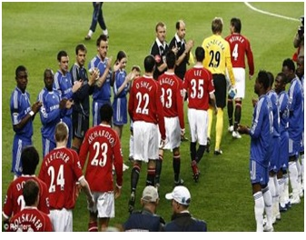
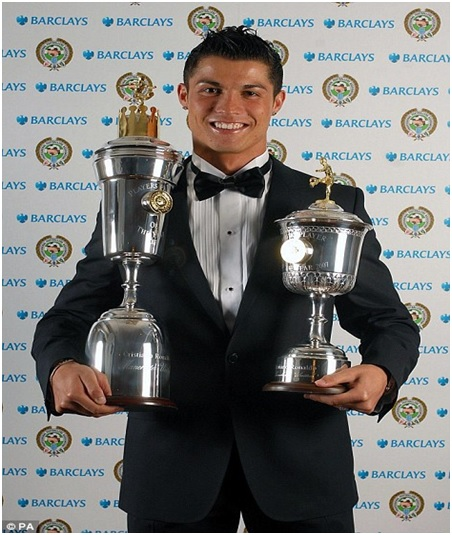

Chương 37

rước mùa 2006-2007, ít ai nghi ngờ khả năng Chelsea vô địch Ngoại Hạng lần thứ ba liên tiếp. Đội hình vốn đã mạnh, nhà đương kim vô địch còn mua thêm hai siêu sao Andriy Shevchenko và Michael Ballack, trong khi Manchester United bán đi tiền đạo lừng danh Van Nistelrooy, chỉ đem về một tiền vệ thuộc loại khá là Michael Carrick. Riêng Ferguson tự tin hơn bao giờ hết, vì chẳng ai biết trò bằng thầy. Rooney và Ronaldo đã đạt đến độ chín, hai tân binh mua muộn mùa trước là Vidic và Evra bắt đầu hội nhập, nên Quỷ Đỏ chẳng còn ngán ai. Việc bán Nistelrooy, như ta bàn nơi chương trước, thật ra là phúc chứ chẳng phải họa.
Cũng hú hồn, nếu không nhờ tài xử trí của Ferguson, Ronaldo đã rời Old Trafford. Chàng tiền vệ trẻ tuổi bị dân Anh “ném đá” tơi bời vì tội dám “thèo lẻo, xúi bẩy” trọng tài đuổi Rooney trong trận Anh – BĐN ở World Cup 2006, rồi sau khi thấy Rooney ăn thẻ đỏ còn ranh mãnh nháy mắt một cái. Kết thúc giải, về đến Manchester, Ronaldo thấy cửa sổ nhà mình bị đập bể, còn hộp thư chất đầy những thư nặc danh, hăm dọa “xin tý huyết”. Hoảng hồn, anh tính chuyện sang Tây Ban Nha, đá cho Real Madrid hay Barcelona.
Thật sự, khi chơi cho ĐTQG, ai phải vì nước ấy, đâu thể nể nang các đồng đội ở CLB. Còn nhớ hồi năm 1965, khi Anh đá giao hữu với Scotland, Nobby Stiles trong lần đầu khoác áo Tam Sư, lon ton chạy đến chào Denis Law, liền bị Law đẩy ra kèm theo câu mắng: “Cút mẹ mày đi, thằng khốn người Anh”. Máu lửa, thù địch là vậy, nhưng khi về đến Old Trafford lại thân với nhau như thường. Chuyện Ronaldo và Rooney chẳng có gì lớn, chẳng qua bị giới truyền thông lá cải, thổi phổng, kích động, mới biến ra…tối đại vấn đề. Sir Alex phải trổ tài thuyết khách, thuyết phục Ronaldo ở lại, rồi tìm cách cho anh và Rooney hòa giải với nhau. Rooney cũng không để bụng. Anh xuất hiện trên truyền hình, trả lời phỏng vấn chung với Ronaldo, chứng tỏ cho thiên hạ biết giữa hai người không còn hiềm khích. Cuối cùng, mọi việc cũng êm thấm.
Trận khai mạc mùa giải,trên sân Old Trafford vừa được mở rộng với sức chứa 76000 người[1], United đánh tan mọi hoài nghi. Rooney, Ronaldo, và Saha đều ghi bàn, đem về chiến thắng đậm đà 5-1 trước Fulham. Từ đó, trừ khoảng hai tuần ngắn ngủi trong tháng chín, họ không bao giờ để rơi ngôi đầu. Mới sang đầu năm 2007, Chelsea đã có vẻ đeo bám không nổi. Jose Mourinho nhìn rũ rượi hẳn, hai mắt thâm quầng. “Hình như tôi không đủ tài”, ông ta mệt mỏi thốt lên trong buổi họp báo, “Hình như cầu thủ của tôi không đủ giỏi”.
3 tháng 3, 2007 là một ngày quan trọng: Manchested United gặp Liverpool trên sân Anfield. Nếu không tính trận áp chót gặp Chelsea, Liverpool là đối thủ lớn cuối cùng United phải đối đầu, vượt qua Liverpool coi như 90% ôm cúp trong tay. Vận may dường như không đứng về Quỷ Đỏ: Hết Rooney rời sân vì chấn thương, đến Paul Scholes lĩnh thẻ đo do chơi xấu Xabi Alonso. Đến phút 92, khi tỷ số vẫn là 0-0, United được hưởng quả đá phạt bên góc trái. Ai cũng ngỡ Ronaldo sẽ chuyền, nhưng anh tung cú sút căng. Bị bất ngờ, thủ thành Pepe Reina không bắt được dính, để bóng văng ra. John O’Shea ập vào đá bồi, ghi bàn thắng quý như vàng.
Đầu mùa, mọi người đều chắc mẩm trận đấu vòng áp chót giữa Chelsea và United sẽ vô cùng gay cấn. Chẳng ngờ đến khi trận đấy diễn ra, Quỷ Đỏ đã thừa điểm vô địch. Đến thăm Chelsea tại Stamford Bridge, Sir Alex tung ra một đội hình lạ hoắc, gồm những cầu thủ muôn đời dự bị như thủ môn Tomasz Kuszczak, hậu vệ Kieran Lee, tiền vệ Chris Eagles, và trung phong…Dong Fangzhuo người Trung Quốc. Trên khán đài, fan hâm mộ Manchester hát vang:
Nghe không, Mourinho?
Lau cúp cho bóng vô
Tháng năm này chúng tớ
Sẽ lấy đem trở về
Đem về ta trang trí
Vườn cổ tích Fergie
Tỷ số cuối cùng là 0-0. Gặp nhau ba lần mùa đó, Chelsea hòa hai, và thắng United tại chung kết Cúp FA. Bất khả chiến thắng, nhưng Ferguson chẳng buồn. Vô địch Ngoại Hạng thì sức mấy mà buồn!

Trước trận Chelsea – Manchester United: Các cầu thủ áo xanh đắng lòng đứng vỗ tay chào mừng nhà tân vô địch (Ảnh: Enko-football.com)
Trận cầu đáng nhớ nhất của United trong mùa 2006-2007 không phải ở giải Ngoại Hạng, mà là cuộc chạm trán với AS Roma ở tứ kết lượt về Champions League. Lượt đi thua 1-2, người hâm mộ Quỷ Đỏ vẫn tự tin đội nhà có thể lật ngược tình thế, song những gì xảy ra tại Old Trafford hôm ấy vượt ngoài sức tưởng tượng của bất kỳ ai. United chơi với tốc độ chóng mặt, liên tục đập nhả một chạm. Ronaldo và Carrick lập cú đúp, Rooney, Smith và Evra ghi mỗi người một bàn, làm nên chiến thắng không tưởng 7-1.Theo lời Ronaldo, lúc tỷ số đang là 6-0, một hậu vệ đối phương thậm chí còn năn nỉ, xin anh thương tình: “Thôi mà, ăn sáu trái rồi, còn lừa mãi làm gì”.
Trên khán đài tối đó, các fan Roma không tin vào mắt mình. CLB của họ nào phải tay mơ, có đầy đủ sao số như Francesco Totti, Daniele De Rossi, Cristian Chivu…, chẳng hiểu sao lại thất bại thê thảm đến vậy. Nhiều phóng viên Italy trong khu báo chí nổi giận, bỏ về ngay sau hiệp một. Trong buổi họp báo sau trận đấu, Ferguson tự hỏi: Không biết trong suốt lịch sử Cúp C1, có màn trình diễn nào ấn tượng đến thế này chăng.
Giữa lúc người hâm mộ Quỷ Đỏ ngất ngây, mơ về một cú ăn ba thứ hai, AC Milan tạt nước vào giấc mộng vàng, phục thù giùm đồng hương ở vòng bán kết. United thắng lượt đi 3-2, với cú đúp của Rooney,chỉ để tan tác tại lượt về. Trên đất Ý, Kaka, Seedorf và Gattuso chơi như lên đồng, giúp Milan thắng thuyết phục ba bàn không gỡ.
Dù tắt điện trong trận thua Milan, xét chungcả mùa, 2006-2007 chứng kiến sự trưởng thành vượt bậc của Cristiano Ronaldo. Từ một cậu bé lóc chóc, hay phô diễn kỹ thuật cá nhân một cách không hiệu quả, dưới sự dẫn dắt của Sir Alex, anh vươn lên đẳng cấp hàng đầu thế giới. Không cắm đầu lừa banh bừa bãi, Ronaldo giờ đây biết rõ khi nào cần cầm bóng, khi nào cần chuyền, và khi nào cần trổ tài lắt léo. George Best và Ryan Giggs sở hữu những đôi chân ma thuật, khéo léo, nhưng dường như vẫn chưa bằng Ronaldo. Mỗi pha bóng của Ronaldo là một tác phẩm nghệ thuật: Anh chạy nhanh như điện chớp, đảo chân dẻo như rang lạc; lúc thì quay mặt sang trái, nhưng gạt bóng sang phía phải; khi chơi trò giật gót, xỏ kim, khiến đối phương chẳng biết đâu mà lường. Trông dáng anh chạy, thấy nhẹ nhàng như không để lại dấu chân trên mặt tuyết. Thôi thì hậu vệ tìm đủ mọi cách truy cản anh: Nắm áo, kéo quần, dẫm chân, vật ngã. Tất cả đều vô hiệu.
Điểm mạnh nhất ở Ronaldo là…cái gì cũng mạnh, tức là sự toàn diện trong lối chơi! Trong anh có kỹ thuật và tốc độ của Giggs, khả năng đánh đầu và nhạy cảm vị trí của Sheringham, sức mạnh trong từng cú sút của Scholes, cùng tài sút phạt của Beckham. Tuy đá dạt cánh, không phải trung phong, Ronaldo liên tục ghi bàn. Anh dứt điểm tốt, và rất chịu khó dứt điểm: Góc hẹp mấy cũng sút, xa 40-50 mét cũng sút, hễ thấy được khung thành là tự tin sút. Những cú sút của Ronaldo, dù là sút phạt hay bóng sống, đều mang lực cực mạnh, thủ môn rất khó truy cản; nếu cản được cũng dễ để bóng văng ra, tạo cơ hội cho đối thủ lao vào đá bồi. Mùa 06-07, Ronaldo cùng Rooney là vua phá lưới của United, với 23 bàn thắng[2], đồng thời trở thành người đầu tiên hợp nhất được ba danh hiệu của bóng đá Anh: Cầu Thủ Xuất Sắc của PFA, Cầu Thủ Xuất Sắc của FWA, và Cầu Thủ Trẻ Xuất Sắc.
Một trong những màn trình diễn siêu đẳng nhất của Ronaldo diễn ra ở trận United thắng Bolton 4-1. Trận này, bóng cứ như dính chặt vào chân anh, Bolton cử đến bốn, năm hậu vệ theo kèo cũng chẳng làm được gì. Hết trận, một phóng viên đặt câu hỏi cho HLV Bolton, Sam Allardyce:
-Hôm nay hậu vệ đội ông bị Ronaldo lừa như ngóe, ông có sợ về lâu về dài, họ sẽ bị tổn thương về tâm lý không?
-Tổn thương thôi à – Allardyce đáp – Phải đi phẫu thuật thẩm mỹ, chỉnh sửa lại toàn diện luôn ấy chứ!

Ronaldo nhận hai giải thưởng của PFA: Cầu Thủ Xuất Sắc Nhất Nước Anh và Cầu Thủ Trẻ Xuất Sắc Nhất (Ảnh: Dailymail.co.uk
Chú thích:
[1] Các thập niên 1970, 1980, United liên tục tân trang, tu sửa sân Old Trafford, song sức chứa lại giảm đi. Đến mùa 2006-2007, sân mới được mở rộng trở lại, sức chứa gần bằng nguyên thủy (80000 người).
[2] Louis Saha xếp sau với 13 bàn. Đặc biệt, Solskjaer tuy bị chấn thương hành hạ, rất ít khi ra sân, vẫn kịp lập công tới 11 lần. Manchester United có đến tám cầu thủ được chọn vào đội hình tiêu biểu của giải Ngoại Hạng.